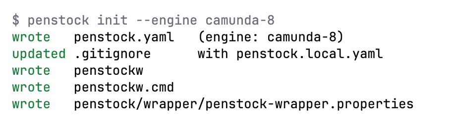

Guide / Set up a project
penstock.yaml
One file in your project says what the project is: which engine, which templates, where to deploy. Every key is explained here.
What it is for
penstock.yaml is a small text file that you write by hand and commit with your diagrams. The plugin and the command line both read it. So everyone on the team, and your pipeline, gets the same engine, the same rules and the same deployment target. A change to it is reviewed like any other change.
Every key is optional. What you leave out keeps its default.
Create it
- Open an empty diagram and answer the engine question above the canvas. The file is created for you.
- Or create it with
penstock init, which writes it with the engine guessed from your diagrams, addspenstock.local.yamlto.gitignore, and installs thepenstockwwrapper.

Open or create it in your tool
JetBrains
In the Penstock tool window press Open penstock.yaml. It opens the file, or creates it when there is none. When a project still has settings in .idea/bpmn-project.xml and no penstock.yaml, a notification offers to write one from them. The page Settings | Tools | Penstock holds no project settings: it shows the version, the open-source licences and the projects Penstock trusts. See Settings in the IDE.
VS Code
In the toolbar of the Penstock view press Open penstock.yaml. It opens the file, or creates it when there is none. Choosing an engine in the editor writes it too: it creates the file, or adds the engine to the existing file and touches nothing else. A saved connection goes to penstock.local.yaml. Penstock has no page in VS Code's Settings.
Command line
Run penstock init. To see which files and settings apply, run penstock doctor, or penstock doctor --format json for the result after all layers.
An example
# yaml-language-server: $schema=https://raw.githubusercontent.com/kern0x1b/penstock-release/main/docs/schema/penstock.schema.json
engine: camunda-7 # classic | camunda-7 | camunda-8 | operaton | cib-seven
scriptType: groovy # none | groovy | javascript
elementTemplates:
- templates/connectors
linked:
- ../order-workers
lint:
configPath: rules/.bpmnlintrc
tests:
language: kotlin # java | kotlin
out: src/test/kotlin
package: com.example.orders.process
deployment:
url: http://localhost:8080/engine-rest
name: Order handling
source: penstock
profiles:
test:
deployment:
url: https://bpm-test.example.com/engine-rest
auth:
type: basic
username: ${BPM_USER:ci}
prod:
deployment:
url: https://bpm.example.com/engine-rest
auth:
type: oauth
clientId: penstock
tokenUrl: https://auth.example.com/oauth/tokenEvery key
| Key | What it does |
|---|---|
engine | Which engine the diagrams are for: classic, camunda-7, camunda-8, operaton or cib-seven. It decides the palette, the properties panel and what deploy does. See Engines. |
scriptType | Default language of scripts: none, groovy or javascript. For Camunda 7, Operaton and CIB seven only. See Scripts in their own tab. |
elementTemplates | A list of files and folders with element templates, relative to the project root. A .camunda/element-templates folder next to a diagram or above it is read without being listed. See Element templates. |
linked | A list of other repositories, relative to the project root. Their diagrams, workers, delegates and beans count as part of this project. A path that is not checked out is skipped. See Code links. |
lint.configPath | The .bpmnlintrc to use, relative to the project root. Without it: .bpmnlintrc in the root, or bpmnlint:recommended. See Validation. |
lint.clientBundlePath | A bundle of rules from bpmnlint plugins, for the editor. Needed only when .bpmnlintrc uses a plugin. |
conventions.ids.fromName | Rewrite an element's id when its name changes. Pro |
conventions.ids.pattern | The shape of the id. {Type} is the element type, {Name} the name in PascalCase. Default {Type}_{Name}. |
conventions.defaults | Attributes to set on a new element, keyed by its BPMN type such as bpmn:ServiceTask. Pro |
tests.language, tests.out, tests.package | Where penstock junit writes tests. Without it, each diagram's tests go in the nearest module with a Gradle or Maven build, in Kotlin when that module has Kotlin sources and Java otherwise, in the package of its application, followed by .process. See Process tests and coverage. |
hooks.preCheck, postCheck, preLayout, postLayout, preDeploy, postDeploy | A command to run before or after a stage. See below. |
deployment.url | Where to deploy. The engine decides what the address means. See Deployment. |
deployment.name | The deployment's name in the engine. Default Penstock deployment. |
deployment.tenantId | The tenant to deploy to. Empty means the default tenant. |
deployment.source | The source the engine records for the deployment, so you can tell in the engine's own list who sent it. Default penstock. |
deployment.changedOnly | Leave out what the engine already has unchanged. On unless you set false. |
deployment.activationTime | An ISO 8601 timestamp when the deployment becomes active. Camunda 7 family. |
deployment.forTests | Marks an engine that test-case runs may deploy test builds to and answer jobs on. See Scenarios. |
deployment.auth.type | none, basic or oauth. |
deployment.auth.username | The user for basic. Not a secret, so it may be in the file. The password comes from your tool's secret store, or from PENSTOCK_PASSWORD on the command line. |
deployment.auth.clientId, tokenUrl, audience | For oauth: the client id, the address of the token endpoint that issues the access token, and the audience the token is for. The client secret comes from your tool's secret store, or from PENSTOCK_CLIENT_SECRET on the command line. |
profile | The profile in force. PENSTOCK_PROFILE wins. See Profiles. |
profiles | Named sets of overrides. See Profiles. |
A file that has a key Penstock does not know is marked by the schema. The schema is at schema/penstock.schema.json. Each tool carries its own copy, which is always the one that matches its version.
There are no layout settings. Auto layout uses its own spacing and .bpmnlayoutrc is not read.
Who wins when several files say different things
Four layers, in order. Each later one overrides the earlier ones.
penstock.yaml: the project's answer, committed. Penstock reads every folder from the project root down to the diagram and merges them, so the file nearest the diagram wins.penstock.local.yaml: this machine's answer, in the same folders, read right after the file beside it. Keep it out of version control. Penstock adds it to.gitignorewhen it writes one.profiles.<name>: the profile in force, laid over the merged result.PENSTOCK_*environment variables: the last word. The name is the key path in capitals joined by underscores:PENSTOCK_DEPLOYMENT_URL,PENSTOCK_ENGINE,PENSTOCK_LINT_CONFIGPATH.trueandfalseand whole numbers are read as such.
Also accepted: penstock.yml and penstock.json, and their .local versions.
Use an environment variable inside the file
Any text value may reference the environment: ${VAR}, or ${VAR:fallback} when it may be missing. That is how a value gets in without being written down.
auth:
username: ${BPM_USER:ci}Rules the editor applies for you
Camunda advises readable technical ids. Put your convention in the file and the editor applies it. Pro
conventions:
ids:
fromName: true
pattern: "{Type}_{Name}" # "Check stock" on a service task -> ServiceTask_CheckStock
defaults:
bpmn:ServiceTask:
camunda:asyncBefore: trueids rewrites the id when the name changes, and adds a number rather than colliding. defaults sets attributes on an element as it is created. Changing a task into a service task counts as creating one. Both happen inside the same editing step, so one Undo takes them back together with the change that caused them.
Commands around a stage
hooks:
preDeploy: npm run verify-workers
postDeploy: ./notify-release.sh
postLayout: git add -AA hook runs in the project root when Penstock reaches that stage. It sees PENSTOCK_FILES (one file per line), PENSTOCK_ROOT, PENSTOCK_STAGE and PENSTOCK_PROFILE. preDeploy and postDeploy also run around a deployment from an editor, and there only in a trusted project. A pre hook that exits with a non-zero code stops the stage. That is how a project says "not without this check".
Secrets
Passwords, tokens and client secrets are never read from these files and never written to them. In the editor they go to the secret store of your tool, separately for each profile, when you type them into the Connection dialog. On the command line they come from PENSTOCK_PASSWORD, PENSTOCK_CLIENT_SECRET and PENSTOCK_TOKEN. A user name or a client id is not a secret and may be in the file.
What is not in the file
Anything about how your editor looks: which toolbar actions are pinned, whether the tour has been seen, the editor theme, Sketchy drawing, the width of the sidebar and the tab you left selected, tree or flat view of the project model, the last export format. That is yours, not the project's. It lives in ~/.penstock/preferences.json, or under PENSTOCK_HOME when that is set. See Files Penstock reads and writes.
Language
The editors, the messages and the command line are in English, German, Spanish, French, Japanese, Korean, Portuguese (Brazil), Russian and simplified Chinese. The pages of this guide and the rule pages are in English.
- In an editor a
localein~/.penstock/preferences.jsoncomes first, if there is one. Without it the language of your tool is used, and without that the one of the browser engine the editor runs in. - On the command line it is
--lang, then the first ofLC_ALL,LC_MESSAGESandLANGthat is set and is notCorPOSIX. - A language Penstock does not have gives English. So does Traditional Chinese (script Hant, or the regions TW, HK and MO), and any Portuguese other than Brazil.
Only the words Penstock writes are translated. The names in your diagrams, the findings' ids and the keys of penstock.yaml stay as they are.
Completion and validation
The file starts with a yaml-language-server line that names the JSON schema. Editors that understand it, such as VS Code, give completion, validation and hover help. Tools that ship Penstock carry their own copy of the schema, so it also works with no network. See below for your tool.
In your tool
JetBrains
The plugin registers the schema for penstock.yaml, penstock.yml, penstock.json and the .local versions. Completion, validation and hover help work with no setup and no network.
VS Code
The extension registers the schema for penstock.yaml, penstock.yml, penstock.json and the .local versions. Completion, validation and hover help work with no setup, and configuration problems are listed in the Problems view.
Command line
Not available on the command line. The command line does not edit files. penstock doctor reports a file it cannot read.
A file that cannot be read is reported in a message that names the file and the error. The previous answer stays in force until the file parses again.
What to commit
penstock.yaml | Commit it. |
penstock.local.yaml | Do not commit it. It is where your machine differs from the project. |
.bpmnlintrc, .camunda/element-templates | Commit them. |
.bpmn, .dmn, .form | Commit them. Reviewing them next to code is the point. |
| Credentials | Nothing to commit. They live in the secret store of your tool. |
.bpmnlayoutrc | Not read any more. Delete it. |
penstockw, penstockw.cmd, penstock/wrapper/penstock-wrapper.properties | Commit them, so everyone runs the same version of the command line. |
What you see
- Completion and hover help while you type in
penstock.yaml, in tools that read the schema. penstock doctorlists which files apply, the engine and the profiles.
Common problems
- My setting is ignored.
- A nearer file, the local file, the profile or an environment variable may override it. Run
penstock doctor --format json. It prints the settings that apply after all four layers. - The editor says it cannot read my file.
- The YAML is not valid. The notification names the line. Fix it. The old answer stays until then.
- An editor marks a valid key as unknown.
- That editor is reading the schema from the URL in the first line of the file, and the copy on this site can be older than your version of Penstock. A tool with Penstock uses its own copy. The warning does not change how Penstock reads the file.